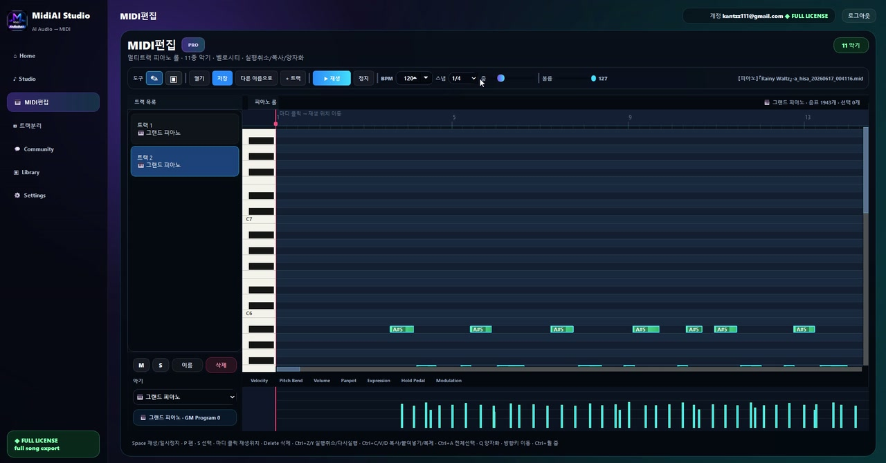
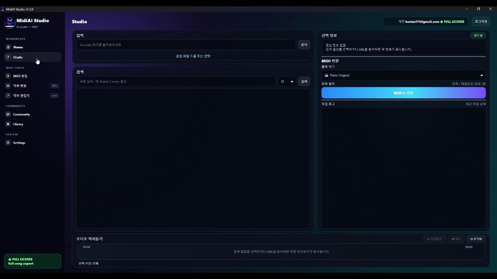

Guide · MIDI editing craft
Turning Raw AI MIDI Into a Clean, Musical Part
An AI transcription arrives as a confident, capable draft — and drafts need editing. The best mental posture is to treat the raw output as a strong first pass by a fast assistant, not as a final verdict, because AI conversion introduces a recognizable family of small artifacts that a short cleanup pass resolves.
What makes cleanup efficient is that these artifacts are predictable. Once you know the specific things AI transcription tends to get slightly wrong — stray notes, over-eager quantization, flattened dynamics — you can hunt them systematically rather than proofreading blindly, and the part comes together quickly.
This guide gives you that systematic process for cleaning up MidiAI Studio output into a polished, musical part. It assumes the transcription is already largely accurate and focuses on the finishing work that turns good into genuinely done.

Treating AI output as a draft, not a verdict
Cleaning up AI-generated MIDI is the finishing process of correcting the characteristic artifacts of automated transcription — spurious notes, timing quantization, flattened velocity, and fragmented durations — to produce a part that sounds intentional and musical.
It differs from accuracy correction in emphasis: the notes are largely right, and the work is refinement, removing the tell-tale signs of automation so the result reads as a considered performance rather than a machine's readout.
The signature artifacts of AI transcription
AI transcription tends toward a few signature artifacts, and recognizing them is what makes cleanup fast. Extra notes appear where the model heard ambiguity — reverb tails, overlapping harmonics — and doubled or overlapping notes appear where it was unsure whether one event or two occurred. These clustered errors are found by pattern, not by scanning every note.
The model also often over-quantizes or flattens expression as a side effect of prioritizing accuracy. Timing may be snapped a little too rigidly and velocities compressed toward a middle value, so MidiAI Studio's output can be technically correct yet feel mechanical until you restore the human variation the transcription smoothed away.
Fragmentation is the subtler artifact: a single sustained note may be split into two shorter ones where the model detected a false re-attack, or a legato phrase may lose its connectedness. Rejoining these fragments and restoring intended durations is what returns the part to sounding like continuous music rather than a series of clipped events.
Removing stray, doubled, and overlapping notes
Polishing a transcribed string melody
Suppose MidiAI Studio transcribed a lyrical string melody in E major, and the notes are all correct but the part feels stiff. Inspecting it, you find three telltale artifacts: a few stray notes from bow noise, uniform velocities, and one long note split into two.
You delete the stray notes clustered around the phrase ends, redraw a gentle velocity arc so the melody swells and recedes as a string player would phrase it, and rejoin the fragmented note into the single sustained tone it should be. Each fix targets a known AI artifact.
The transformation is striking: the same correct notes now breathe and sing rather than sitting flat. The cleanup took minutes because you knew exactly which artifacts to look for, turning an accurate-but-mechanical draft into an expressive, finished part.

Fixing quantization the AI applied too eagerly
- Adopt a draft mindset. Approach the AI output expecting to refine it, not judge it. Treating the transcription as a capable first pass focuses you on finishing work rather than disappointment at imperfection.
- Sweep out spurious and doubled notes. Remove stray, doubled, and overlapping notes, checking the clusters near reverb tails and ambiguous onsets. Clearing these first reveals the true part underneath.
- Loosen over-eager quantization. Where timing feels rigid, restore small human deviations so the rhythm breathes. Perfectly gridded timing is a common giveaway of automated output.
- Redraw flattened dynamics. Replace uniform velocities with shaped crescendos, accents, and contrast appropriate to the instrument. Restoring dynamics is the biggest single step toward a musical feel.
- Rejoin fragmented notes. Merge notes the model split by false re-attacks and restore intended durations. Reconnecting fragments returns legato and sustain to the part.
Restoring dynamics the model flattened
- Expect and look for the known family of AI artifacts rather than reading blindly.
- Clear spurious notes before refining timing or dynamics.
- Reintroduce subtle timing variation where the grid feels too rigid.
- Shape velocity to the instrument's natural phrasing.
- Check for and rejoin fragmented sustained notes.
Rejoining notes the AI fragmented
- Judging the draft instead of refining it: Treating AI output as final rather than a draft leads to abandoning good material over minor artifacts.
- Refining over spurious notes: Shaping dynamics before removing stray notes wastes effort on clutter you will delete.
- Leaving rigid quantization: Over-gridded timing keeps the part sounding mechanical no matter how correct the notes.
- Accepting flat velocities: Uniform dynamics are the clearest sign of unpolished automated output.
- Ignoring fragmented notes: Split sustained notes break legato and betray the part's machine origin.
A cleanup order that converges quickly
The draft mindset is the quiet key to getting value from AI transcription, because it aligns your expectations with reality. A model produces a fast, capable first pass the way a skilled assistant might, and no one would hand an assistant's first draft straight to a client. Seeing MidiAI Studio's output as that draft turns cleanup from a grievance into a normal, satisfying stage of the work.
What makes AI cleanup so much faster than blind proofreading is that automation errs in patterns, not at random. A human copyist makes idiosyncratic slips, but a model makes systematic ones tied to how it reasons about sound, so the same artifact types recur in predictable places. Learning that family once pays off on every transcription you ever clean.
Knowing when the part is genuinely finished
The tension between accuracy and expression is worth understanding, because it explains why correct MIDI can feel dead. A model optimizing to place the right notes at the right times will tend to regularize timing and dynamics, since irregularity looks like error to it — but that very irregularity is what human expression is made of. Your cleanup is, in a sense, adding back the meaningful imperfection the model removed.
Ultimately, cleanup is where the transcription becomes yours. The model supplies the notes, but the phrasing, the dynamic arc, and the connectedness are decisions only a musician makes, and applying them is what transforms a shared, automated draft into a personal, finished interpretation. That final layer of judgment is not a chore but the part where your musicianship actually shows.
FAQ
Straight answers for musicians researching cleanup checklist AI MIDI. Expand any question—answers stay on this page so you do not bounce away mid-read.
Why does accurate AI-transcribed MIDI still sound mechanical?
Usually because the model over-quantized the timing and flattened the velocities as a side effect of prioritizing accuracy. Restoring subtle timing variation and shaped dynamics is what returns the human feel to correct notes.
What are the telltale artifacts of AI-generated MIDI?
Stray or doubled notes near ambiguous onsets and reverb tails, overly rigid timing, compressed velocities, and sustained notes fragmented by false re-attacks. Knowing this family lets you hunt them systematically.
Should I fix stray notes or dynamics first when cleaning up AI MIDI?
Remove spurious and doubled notes first, because they clutter the part and can mislead your later edits. With the true notes revealed, you can then shape timing and dynamics efficiently.
Why did one long note become two in my transcription?
The model likely detected a false re-attack within a sustained note and split it. Rejoining the fragments into the single intended note restores the legato and correct duration.
How do I know when an AI-transcribed part is finished?
When the characteristic artifacts are gone and the part sounds intentional — clean of stray notes, breathing in its timing, shaped in its dynamics, and connected in its phrasing. At that point further edits yield diminishing returns.